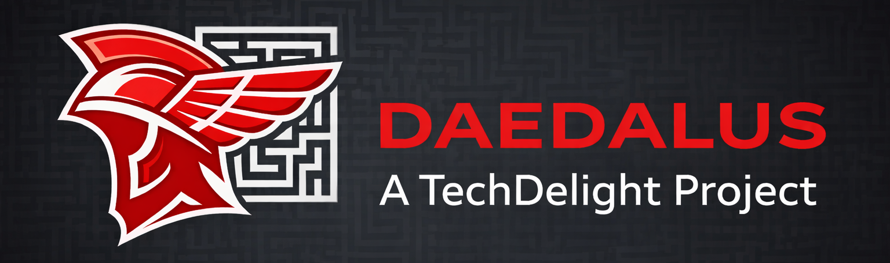

The autonomous workshop

Run Claude Code autonomously.
Zero permission prompts. Isolated in Docker.
Interactive terminal dashboard — start, attach, and monitor projects.
Browser-based dashboard with embedded terminal via WebSocket.
Launch projects and run headless tasks from the command line.
Claude Code is powerful, but using it day-to-day has real friction.
Claude asks for confirmation on every file edit, shell command, and tool call. You end up babysitting instead of building.
Working from a phone, a train, or anywhere with spotty wifi means your session dies the moment the connection drops — and all context is lost.
Juggling multiple Claude sessions across different codebases means manually managing terminals, containers, and context.
All permissions pre-approved. Claude runs commands, edits files, and uses tools without interruption.
One install command. One binary. No Node.js, no Python, no dependency hell.
CLI for scripting. TUI dashboard for the terminal. Web UI with embedded terminal for the browser.
Dev, Godot, or custom build targets. Multi-stage Dockerfile covers different toolchains.
Home directories and session transcripts survive container restarts. Resume any session later.
Connect MCP servers via stdio or HTTP. Configure once, use across all projects.
daedalus my-app /project
docker compose run
/workspace ← your project (rw)/home/claude ← persistent cacheOne command. Downloads a pre-built binary — no build step, no dependencies.
$ curl -fsSL https://raw.githubusercontent.com/techdelight/daedalus/master/install.sh | bash
Point Daedalus at any codebase. It registers the project, spins up an isolated container, and drops you into a tmux session. On first run, authenticate with claude /login — credentials persist automatically.
$ daedalus my-app /path/to/project
Start, stop, attach, and switch between projects. Disconnect anytime — tmux keeps sessions alive.
# Terminal dashboard $ daedalus tui # Browser dashboard $ daedalus web